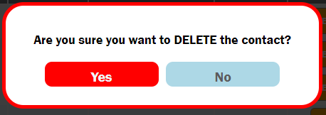

My Phone Book by Mohammad Ala Tahhan
General Information
My humble Phone Book offer the following features:
-
Adding contact:
- You can add a contact and the form will control the following:
-
if at least the <First Name> and <phone number> are
included
-
if the entered <phone number> is a valid number and should be from 7 to 15
digits.
-
Edit Contact:
- Have missed spelling or a number, or want to add an address to existing contact, don't worry, as I
got you covered.
-
Search as you type.
Messages and Warning:
-
When you add a contact a message should confirm that adding is succeeded.
-
When you edit a contact a message should confirm that editing is succeeded.
-
When you choose update and change nothing, a contact a message should inform that nothing is updated.
-
When you delete a contact, a WARNING message should appear to confirm if you really want to delete the
contact.
If you confirm with YES, then a message should confirm that deleting is succeeded.
